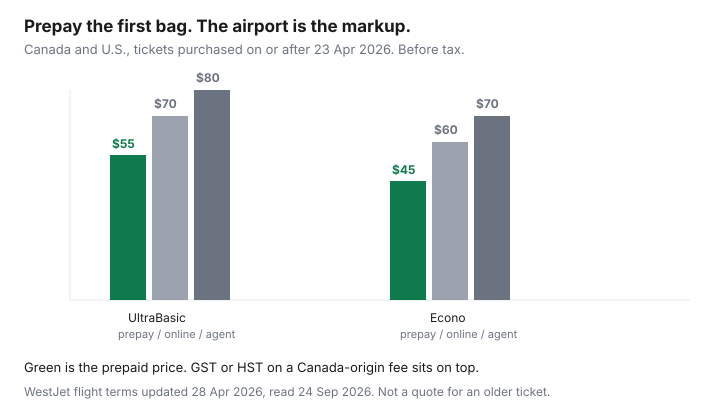

Travel · Canada
WestJet UltraBasic vs Econo: Prepay Bags and Avoid the Airport Markup
The UltraBasic fare is the one that looks finished at the top of the search. It is not finished. Within Canada and to the United States it is a personal item, not a carry-on, and the first checked bag is a second purchase whose price depends on when you pay. Households lose the gap when they compare the headline and meet the airport price.
Figures below were read from WestJet’s baggage page and flight terms on 24 Sep 2026. The terms file was marked updated 28 Apr 2026. Fees move, and the receipt on your booking is the price that will be charged. The packing system for both airlines is the checked-bag guide. This page is the WestJet fare-brand decision.
Disclosure: No flight-booking or card partnership is claimed on this page. Saving Optimizer does not rank credit cards. Education only.
Key takeaways
- On tickets purchased on or after 23 April 2026, for travel within Canada and to or from the U.S., WestJet’s flight terms price an UltraBasic first bag at $55 prepaid at booking, $70 at online check-in, and $80 with an airport agent. Econo or Member Exclusive is $45 / $60 / $70 on the same three clocks. Tax is extra on a Canada-origin itinerary.
- The public baggage table shows those prepaid first bags as $55–$65 (UltraBasic) and $45–$53 (Econo) within Canada and the U.S. The band is the tax difference by departure airport. Prepay in Manage Trips up to 24 hours before departure.
- A WestJet Rewards member discount on the first bag applies only if the Rewards ID is attached when you prepay. Regular pricing applies at online check-in and at the airport. Silver, Gold, and Platinum include the first bag. Bag benefits do not stack.
- UltraBasic within Canada and the U.S. is one personal item, published as 41 × 14 × 33 cm. A carry-on that is not allowed is checked and draws a checked-bag fee plus a service fee of $25–$30.
- EconoFlex includes the first bag and a change. Premium includes two bags. If the fare gap is smaller than the bag you will actually check, plus a change you might need, the higher brand is the cheaper trip.
- GST or HST is charged on bag fees when the itinerary originates in Canada. The receipt should show the fee and the tax line. A U.S. departure is a different tax stack.
Compare UltraBasic and Econo inclusions before you filter by price only
Filter by price and UltraBasic wins the sort. It wins because the fare is missing pieces Econo still has. WestJet’s fare chart, read the same day, is the list that matters.
| Inclusion | UltraBasic | Econo or Member Exclusive | EconoFlex |
|---|---|---|---|
| Personal item | Yes | Yes | Yes |
| Carry-on within Canada and the U.S. | No, unless Extended Comfort is bought for every flight in that direction | Yes | Yes |
| Carry-on to and from Europe or Asia | Yes | Yes | Yes |
| First checked bag, Canada and U.S. | Prepaid from $55 before tax | Prepaid from $45 before tax | Included |
| Changes | Not allowed | Fee, plus any fare difference | Included |
| WestJet Rewards earn | Not on this fare | Yes | Yes |
Two adults who each need a roller are not buying one cheap fare. They are buying two fares plus two bags, each way. Write that total before you sort the search again. Seat selection is a separate fee on UltraBasic and Econo. A seat fee you were going to pay anyway belongs in the same total. The Air Canada version of this decision is the Basic versus Standard guide.
Prepay bags online up to 24 hours out—airport check-in fees are higher
WestJet’s baggage page says to prepay the first or second checked bag online, through Manage Trips, at any time up to 24 hours before the flight. That is the lowest price. The airport is the highest. The flight terms spell the step-up for tickets purchased on or after 23 April 2026, for travel within Canada and to or from the United States.
| When you pay | UltraBasic first bag | Econo or Member Exclusive first bag |
|---|---|---|
| Prepaid at booking | $55 | $45 |
| Online check-in | $70 | $60 |
| Airport agent | $80 | $70 |

The second bag follows the same clock. UltraBasic is $70 prepaid, $85 at online check-in, and $95 at the airport. Econo is $60, $75, and $85. Prepaid bags can be added only on WestJet-operated flights, and only for the first and second piece. A third bag is an airport purchase. If the ticket was purchased before 23 April 2026, the terms point at an older table. Open the receipt. Do not assume this page’s dollars are still on a booking you made in March.
Prepay when you already know the personal item is not enough: a week of clothes, a device plus a coat, or a child whose gear is not the free stroller. Do not prepay a second bag “to be safe” if the first is under 23 kg and the rest fits under the seat. The 24-hour cutoff is real. After that, you are in the online check-in price or the agent price.
WestJet Rewards member bag discounts and when they actually apply
Three different benefits get described as “the member bag.” They are not the same, and they do not stack into extra free bags.
A lower prepaid price, not a free bag. WestJet’s baggage page says Rewards members who do not already have a complimentary bag can access lower first-bag fees by adding their Rewards ID and prepaying on westjet.com or in Manage Trips, up to 24 hours before departure. The ID has to be on the booking at the moment you pay for the bag. Lower pricing applies only if the bag is prepaid. Regular pricing applies at online check-in and at the airport. The page does not publish a single dollar discount. Log in, read the price, and compare it with the guest price before you pay. A discount you discover at the counter is not the discount.
A fare or a tier that already includes the bag. The first bag is included on EconoFlex, Premium, and Business, and for Silver, Gold, and Platinum WestJet Rewards members. It is also included on Econo and Member Exclusive fares to and from Asia. The second bag is included for Premium and Business guests and for Silver, Gold, and Platinum. Platinum includes a third. If the fare or the tier already includes the bag, do not also prepay one.
The cobrand card. The baggage page includes the first bag for WestJet RBC World Elite Mastercard primary cardholders and up to eight guests on the same booking. The service-fees page says bag benefits do not combine: you receive the highest single benefit, and the card benefit applies when that card pays for the flight. Read the reservation. This page will not tell you to open a card. If you already hold one, confirm it is attached before you pay $55 twice. The same “do not stack” rule is in the bag-fee guide.
Carry-on size/weight traps that force a gate-check fee
UltraBasic within Canada and the United States allows one personal item. WestJet publishes that item at 41 × 14 × 33 cm (16 × 6 × 13 in). The carry-on, which Econo includes and UltraBasic generally does not, is 56 × 23 × 36 cm. Wheels count. A bag that fails the sizer is checked baggage, and checked fees can apply.
Two exceptions put a carry-on back on an UltraBasic ticket: travel to and from Europe and Asia, and a booking where Extended Comfort has been purchased for every flight in that direction, including connections. A connection that is not Extended Comfort removes the exception. Read the receipt for each flight, not the outbound only.
The gate is the expensive version of the same bag. An UltraBasic guest who arrives with a carry-on that does not meet an exception is required to check it and is charged a checked-bag fee plus a service fee of $25–$30. On the Canada and U.S. step-up, the airport first bag is already $80 before tax. The service fee sits on top. Prepaying at $55, or leaving the roller at home, is the planned version. There is no published weight limit that turns a personal item into a free checked bag. You still have to lift a carry-on into the bin unaided when the fare allows one. A soft bag that passes a tape measure can fail a rigid sizer if the corners are stuffed. Test it at home.
CATSA still screens liquids at 100 ml or 100 g in one clear bag of at most 1 litre. A full bottle in the personal item is how a carry-on trip becomes a checked bag at security, on any fare. The liquids rule is in the same bag guide.
When Econoflex or Premium is cheaper after bags and change risk
Run the fare as a trip, not as a headline. The dollars below are a labelled sketch for one adult, one way, within Canada, on a ticket purchased on or after 23 April 2026. Your search will not match them. The arithmetic will.
| Path | Labelled fare | Bag you will check | If the date has to move |
|---|---|---|---|
| UltraBasic, personal item is enough | $180 | $0 | Changes are not allowed. A new ticket is the change. |
| UltraBasic plus a prepaid first bag | $180 | $55 before tax | The bag fee on an UltraBasic cancellation is non-refundable if you cancel. The flight terms say that outright. |
| Econo plus a prepaid first bag | $230 | $45 before tax | A change fee plus any fare difference. You keep the carry-on. |
| EconoFlex | $310 | $0 first bag | Changes are included. A fare difference can still apply. |
UltraBasic at $180 plus a $55 bag is $235 before tax on the bag. Econo at $230 plus a $45 bag is $275, and it includes the carry-on you may have been trying to sneak through. If you needed the carry-on and not a checked bag, Econo can be the cheaper product even when its headline is higher. EconoFlex at $310 includes the first bag. It beats UltraBasic-plus-bag-plus-a-brand-new-ticket when the date is not firm. A school concert, a medical appointment, or a parent’s schedule is not a firm date.
Premium includes two checked bags. It is the cheaper brand only when you would otherwise pay for two bags each way, or when the seat and the change rules are the product you were going to buy separately. Do not buy Premium to “be safe” on a weekend that fits in a personal item. Two people on UltraBasic who each check a bag, each way, are four prepaid bags. Put the shared suitcase on the person whose tier or fare already includes one, and use everyone else’s personal item. Weight does not pool. A 28 kg bag is overweight even if the household average is fine. Overweight and oversized, on the baggage page, is a separate fee in a $150–$177 band.
GST on Canada-origin bag fees and how it shows on the receipt
WestJet’s baggage page says bag fees are charged in Canadian or U.S. dollars depending on the booking’s country of origin, and that GST is charged on fees for all itineraries that originate in Canada. The flight terms add that GST, HST, or QST, where applicable, is collected on flights and services provided in Canada, and that those taxes generally do not apply when travel originates in the United States or the journey includes an international origin or destination. A Calgary departure and a Buffalo departure are not the same tax line.
The public prepaid band is how that tax shows up before you have a receipt. UltraBasic’s first bag within Canada and the U.S. is published as $55–$65. A $55 fee plus 5% GST is $57.75. A $55 fee plus 13% HST in Ontario is $62.15. A 15% HST province lands higher, and the top of the published band is the number to plan against until the receipt itemizes the fee and the tax. Québec departures can show QST as well. Do not add a second tax in your head on top of a price that already says “tax included.” Read the line names.
On the receipt, expect the bag as its own charge, then the tax on that charge, separate from the airfare’s own GST/HST and the Air Travellers Security Charge. If you prepaid and the later folio only shows one blended number, the Manage Trips receipt from the day you paid is the record. Keep it. Checked-bag fees are non-refundable if you cancel an UltraBasic fare. They can come back if WestJet cancels the flight, if a disruption means the bag you paid for cannot be used, or if you were charged and you already qualified for a free bag — and that last refund has to be requested before travel. A voluntary date change you are not allowed to make is not one of those cases.
Sources & date stamps
- WestJet, baggage information — prepaid up to 24 hours before departure; Canada and U.S. prepaid bands; Rewards ID rule; personal item 41 × 14 × 33 cm; carry-on 56 × 23 × 36 cm; GST on Canada-origin fees; first-bag inclusions for tiers, EconoFlex, Premium, Business, and the WestJet RBC World Elite Mastercard. Read 24 Sep 2026.
- WestJet, flight terms, updated 28 Apr 2026 — tickets purchased on or after 23 Apr 2026, Canada and U.S. step-up ($55/$70/$80 UltraBasic and $45/$60/$70 Econo); UltraBasic gate service fee of $25–$30; UltraBasic checked-bag fees non-refundable when the guest cancels. Read 24 Sep 2026.
- WestJet, our fares — UltraBasic personal item, no changes, no carry-on within North America except the stated exceptions. Read 24 Sep 2026.
Frequently asked questions
How much is a WestJet UltraBasic checked bag versus Econo?
For tickets purchased on or after 23 April 2026, within Canada and to or from the U.S., WestJet’s flight terms list an UltraBasic first bag at $55 prepaid at booking, $70 at online check-in, and $80 with an airport agent, before tax. Econo or Member Exclusive is $45, $60, and $70 on the same three clocks. The public baggage table shows the prepaid first bag as $55–$65 on UltraBasic and $45–$53 on Econo. That band is the tax difference by departure airport.
When do I have to prepay a WestJet bag?
Up to 24 hours before departure, on westjet.com or in Manage Trips. That is the lowest price. After that you are in the online check-in price or the airport agent price. Prepaid bags can be added on WestJet-operated flights for the first and second piece only.
Does a WestJet Rewards number lower the bag fee?
Members without a complimentary bag can get a lower first-bag price only if the Rewards ID is attached when they prepay. Regular pricing applies at online check-in and at the airport. Silver, Gold, and Platinum include the first bag. Bag benefits do not combine. This is not a card ranking.
What happens if I bring a carry-on on UltraBasic?
Within Canada and the U.S., UltraBasic is one personal item, published as 41 × 14 × 33 cm, unless you are travelling to or from Europe or Asia or you bought Extended Comfort on every flight in that direction. A carry-on that is not allowed is checked and charged a checked-bag fee plus a service fee of $25–$30.
Is GST charged on WestJet bag fees?
Yes, on itineraries that originate in Canada. A $55 fee plus 5% GST is $57.75. A $55 fee plus 13% HST is $62.15. Both sit inside the published $55–$65 prepaid band. The receipt should show the fee and the tax line. A trip that starts in the United States is a different tax stack.